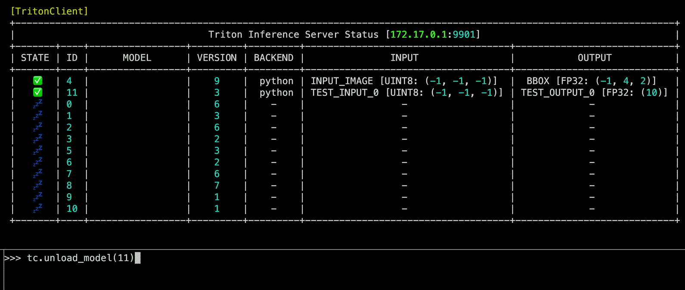

zerohertzLib.mlops¶
MLOps
MLOps에서 사용되는 class들
- class zerohertzLib.mlops.BaseTritonPythonModel[source]¶
Bases:
ABCTriton Inference Server에서 Python backend 사용을 위한 class
Note
Abstract Base Class: Model의 추론을 수행하는 abstract method
_inference정의 후 사용Hint
Logger의 색상 적용을 위해 아래와 같은 환경 변수 정의 필요
spec: template: spec: containers: - name: ${NAME} ... env: - name: "FORCE_COLOR" value: "1" ...
- logger¶
Triton Inference Server 내 log를 출력하기 위한 instance
- Type:
zerohertzLib.logging.Logger
- _inference()[source]¶
Model 추론을 수행하는 private method (상속을 통한 재정의 필수)
- Parameters:
inputs (
NDArray[DTypeLike]) – Model 추론 시 사용될 입력 (config.pbtxt의 입력에 따라 입력 결정)- Returns:
Model의 추론 결과
- Return type:
Union[NDArray[DTypeLike], Tuple[NDArray[DTypeLike]]]
Examples
model.py:class TritonPythonModel(zz.mlops.BaseTritonPythonModel): def initialize(self, args): super().initialize(args, 10) self.model = Model(cfg) def _inference(self, input_image): return self.model(input_image)
- Normal Logs:
[04/04/24 00:00:00] INFO [MODEL] Initialize triton.py:* [04/04/24 00:00:00] INFO [MODEL] Called triton.py:* DEBUG [MODEL] inputs: (3, 3, 3) triton.py:* INFO [MODEL] Inference start triton.py:* DEBUG [MODEL] outputs: (10,) (20,) triton.py:* INFO [MODEL] Inference completed triton.py:*
- Error Logs:
[04/04/24 00:00:00] INFO [MODEL] Called triton.py:* INFO [MODEL] Inference start triton.py:* CRITICAL [MODEL] Hello, World! triton.py:* ==================================================================================================== Traceback (most recent call last): File "/usr/local/lib/python3.8/dist-packages/zerohertzLib/mlops/triton.py", line *, in execute outputs = self._inference(*inputs) File "/models/model/*/model.py", line *, in _inference raise Exception("Hello, World!") Exception: Hello, World! ====================================================================================================
- class zerohertzLib.mlops.TritonClientK8s(svc_name, namespace, port=8001, verbose=False)[source]¶
Bases:
TritonClientURLKubernetes에서 실행되는 triton inference server의 호출을 위한 class
- Parameters:
- __call__()[source]¶
Model 호출 수행
- Parameters:
model (
Union[int, str]) – 호출할 model의 이름 또는 ID*args (
NDArray[DTypeLike]) – Model 호출 시 사용될 입력renew – (
Optional[bool]): 각 모델의 상태 조회 시 갱신 여부
- Returns:
호출된 model의 결과
- Return type:
Dict[str, NDArray[DTypeLike]]
Examples
- Kubernetes:
>>> kubectl get svc -n yolo NAME TYPE CLUSTER-IP EXTERNAL-IP PORT(S) AGE fastapi-svc ClusterIP 10.106.72.126 <none> 80/TCP 90s triton-inference-server-svc ClusterIP 10.96.28.172 <none> 8001/TCP 90s >>> docker exec -it ${API_CONTAINER} bash- Python:
>>> tc = zz.mlops.TritonClientK8s("triton-inference-server-svc", "yolo") >>> tc("YOLO", np.zeros((1, 3, 640, 640))) {'output0': array([[[3.90108061e+00, 3.51982164e+00, 7.49971962e+00, ..., 2.21481919e-03, 1.17585063e-03, 1.36753917e-03]]], dtype=float32)}
- class zerohertzLib.mlops.TritonClientURL(url, port=8001, verbose=False)[source]¶
Bases:
InferenceServerClient외부에서 실행되는 triton inference server의 호출을 위한 class
- Parameters:
- __call__()[source]¶
Model 호출 수행
- Parameters:
model (
Union[int, str]) – 호출할 model의 이름 및 ID*args (
NDArray[DTypeLike]) – Model 호출 시 사용될 입력renew – (
Optional[bool]): 각 모델의 상태 조회 시 갱신 여부
- Returns:
호출된 model의 결과
- Return type:
Dict[str, NDArray[DTypeLike]]
Examples
>>> tc = zz.mlops.TritonClientURL("localhost") >>> tc("YOLO", np.zeros((1, 3, 640, 640))) {'output0': array([[[3.90108061e+00, 3.51982164e+00, 7.49971962e+00, ..., 2.21481919e-03, 1.17585063e-03, 1.36753917e-03]]], dtype=float32)}
- load_model(model_name, headers=None, config=None, files=None, client_timeout=None)[source]¶
Triton Inference Server 내 model을 load하는 함수
- Parameters:
Examples
>>> tc.load_model(0) >>> tc.load_model("MODEL_NAME")
- status(renew=False, sortby='STATE', reverse=False)[source]¶
Triton Inferece Server의 상태를 확인하는 함수
- Parameters:
Examples
>>> tc.status()
{kind=link}